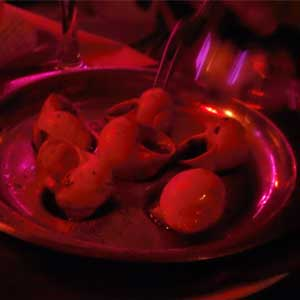

Eat Escargot in FranceGuys, I didn't want to do it. But I did it. My French friend, Vincent, convinced me that a trip to France was not worth it until I tried their famous delicacy... snails, the cousin of slugs. It was covered in a garlic buttery sauce, and really anything is good when its covered with that tasty goodness. I don't regret it, but its slimyness was regretfull. Sorry that the pic isn't great quality- it was the only one I took from that fatefull night! |
 |